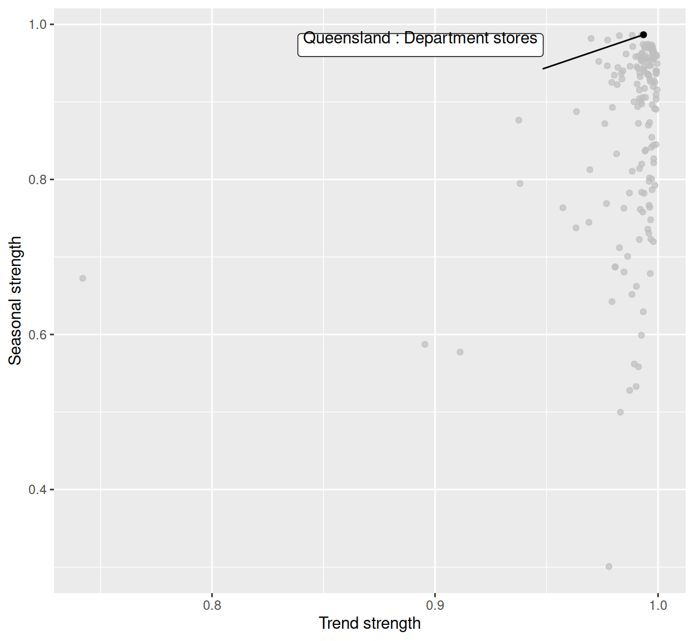
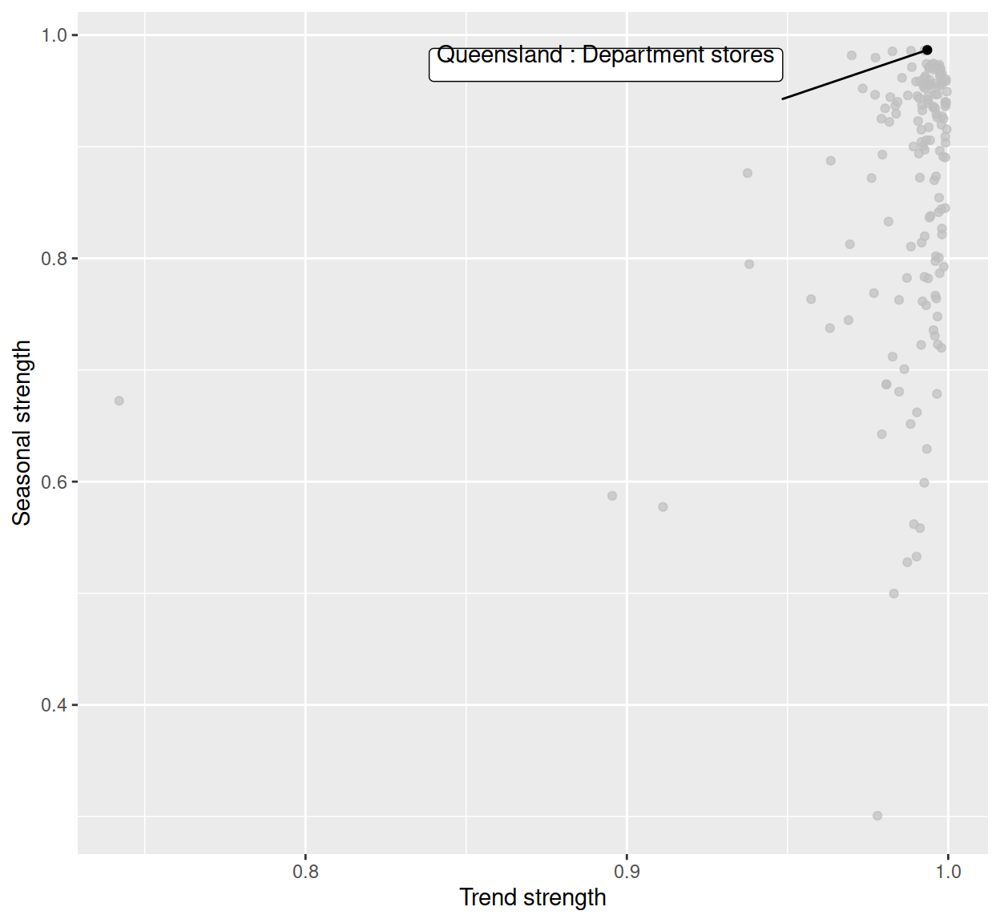

Introduction
Temporal data typically arrives as a set of many observational units measured over time. Some variables may be categorical, containing a hierarchy in the collection process, that may be measurements taken in different geographic regions, or types of products sold by one company. Exploring these multiple features can be daunting. Ensemble graphics (Unwin and Valero-Mora 2018) bundle multiple views of a data set together into one composite figure. These provide an effective approach for exploring and digesting many different aspects of temporal data. Adding interactivity to the ensemble can greatly enhance the exploration process.
This paper describes new software, the tsibbletalk package, for exploring temporal data using linked views and time wrapping. We first provide some background to the approach based on setting up data structures and workflow, and give an overview of interactive systems in R. The section following introduces the tsibbletalk package. We explain the mechanism for constructing interactivity, to link between multiple hierarchical data objects and hence plots, and describe the set up for interactively slicing and dicing time to wrap a series on itself to investigate periodicities.
Background: tidy temporal data and workflow
The tsibble package (Wang et al. 2020) introduced a unified temporal data structure, referred to as a tsibble, to represent time series and longitudinal data in a tidy format (Wickham 2014). A tsibble extends the data.frame and tibble classes with the temporal contextual metadata: index and key. The index declares a data column that holds time-related indices. The key identifies a collection of related series or panels observed over the index-defined period, which can comprise multiple columns. An example of a tsibble can be found in the monthly Australian retail trade turnover data (aus_retail), available in the tsibbledata package (O’Hara-Wild et al. 2020c), shown below. The Month column holds year-months as the index. State and Industry are the identifiers for these 152 series, which form the key. Note that the column Series ID could be an alternative option for setting up the key, but State and Industry are more readable and informative. The index and key are “sticky” columns to a tsibble, forming critical pieces for fluent downstream temporal data analysis.
#> # A tsibble: 64,532 x 5 [1M]
#> # Key: State, Industry [152]
#> State Industry Serie…¹ Month Turno…²
#> <chr> <chr> <chr> <mth> <dbl>
#> 1 Australian Capital Territory Cafes, restau… A33498… 1982 Apr 4.4
#> 2 Australian Capital Territory Cafes, restau… A33498… 1982 May 3.4
#> 3 Australian Capital Territory Cafes, restau… A33498… 1982 Jun 3.6
#> 4 Australian Capital Territory Cafes, restau… A33498… 1982 Jul 4
#> 5 Australian Capital Territory Cafes, restau… A33498… 1982 Aug 3.6
#> # … with 64,527 more rows, and abbreviated variable names
#> # ¹`Series ID`, ²TurnoverIn the spirit of tidy data from the tidyverse (Wickham et al. 2019), the tidyverts suite features tsibble as the foundational data structure, and helps to build a fluid and fluent pipeline for time series analysis. Besides tsibble, the feasts (O’Hara-Wild et al. 2020b) and fable (O’Hara-Wild et al. 2020a) packages fill the role of statistical analysis and forecasting in the tidyverts ecosystem. During all the steps of a time series analysis, the series of interest, denoted by the key variable, typically persist, through the trend modeling and also forecasting. We would typically want to examine the series across all of the keys.
Figure 1 illustrates examining temporal data with many keys. The data has 152 series corresponding to different industries in retail data. The multiple series are displayed using an overlaid time series plot, along with a scatterplot of two variables (trend versus seasonal strength) from feature space, where each series is represented by a dot. The feature space is computed using the features() function from feasts, which summarises the original data for each series using various statistical features. This function along with other tidyverts functions is tsibble-aware, and outputs a table in a reduced form where each row corresponds to a series, which can be graphically displayed as in Figure ??.
 

Figure 1: Plots for the data, with the series of strongest seasonal strength highlighted. (a) An overlaid time series plot. (b) A scatter plot drawn from their time series features, where each dot represents a time series from (a).
Figure 1 has also been highlighted to focus on the one series with the strongest seasonality. To create this highlighting, one needs to first filter the interesting series from the features table, and join back to the original tsibble in order to examine its trend in relation to others. This procedure can soon grow cumbersome if many series are to be explored. It illustrates a need to query interesting series on the fly. Although these two plots are static, we can consider them as linked views because the common key variables link between the two data tables producing the two plots. This motivates the work in this package, described in this paper, to enable interactivity of tsibble and tsibble-derived objects for rapid exploratory data analysis.
Overview of interactivity
There is a long history of interactive data visualization research and corresponding systems. Within R, the systems can be roughly divided into systems utilizing web technology and those that do not.
R shiny (Chang et al. 2020) and htmlwidgets (Vaidyanathan et al. 2019) provide infrastructure connecting R with HTML elements and JavaScript that support the interactivity. The htmlwidgets package makes it possible to embed JavaScript libraries into R so that users are able to write only R code to generate web-based plots. Many JavaScript charting libraries have been ported to R as HTML widgets, including plotly (Sievert 2020), rbokeh (Hafen and Continuum Analytics, Inc. 2020), and leaflet (Cheng et al. 2019) for maps. Interactions between different widgets can be achieved with shiny or crosstalk (Cheng 2020). The crosstalk extends htmlwidgets with shared R6 instances to support linked brushing and filtering across widgets, without relying on shiny.
Systems without the web technology include grDevices, loon (Waddell and Oldford 2020), based on Tcl/Tk, and cranvas (Xie et al. 2014) based on Qt. They offer a wide array of pre-defined interactions, such as selecting and zooming, to manipulate plots via mouse action, keyboard strokes, and menus. The cranvastime package (Cheng et al. 2016) is an add-on to cranvas, which provides specialized interactions for temporal data, such as wrapping and mirroring.
The techniques implemented in the work described in this paper utilize web technology, including crosstalk, plotly, and R shiny.
Using a shared temporal data object for interactivity
The tsibbletalk package introduces a shared tsibble instance built on a tsibble. This allows for seamless communication between different plots of temporal data. The as_shared_tsibble() function turns a tsibble into a shared instance, SharedTsibbleData, which is a subclass of SharedData from crosstalk. This is an R6 object driving data transmission across multiple views, due to its mutable and lightweight properties. The tsibbletalk package aims to streamline interactive exploration of temporal data, with the focus of temporal elements and structured linking.
Linking between plots
As opposed to one-to-one linking, tsibbletalk defaults to categorical variable linking, where selecting one or more observations in one category will broadcast to all other observations in this category. That is, linking is by key variables: within the time series plot, click on any data point, and the whole line will be highlighted in response. The as_shared_tsibble() uses tsibble’s key variables to achieve these types of linking.
The approach can also accommodate temporal data of nesting and crossing structures. These time series are referred to as hierarchical and grouped time series in the literature (Hyndman and Athanasopoulos 2017). The aus_retail above is an example of grouped time series. Each series in the data corresponds to all possible combinations of the State and Industry variables, which means they are intrinsically crossed with each other. When one key variable is nested within another, such as regional areas within a state, this is considered to be a hierarchical structure.
The spec argument in as_shared_tsibble() provides a means to construct hybrid linking, that incorporates hierarchical and categorical linking. A symbolic formula can be passed to the spec argument, to define the crossing and/or nesting relationships among the key variables. Adopting Wilkinson and Rogers (1973)’s notation for factorial models, the spec follows the / and * operator conventions to declare nesting and crossing variables, respectively. The spec for the aus_retail data is therefore specified as State * Industry or Industry * State, which is the default for the presence of multiple key variables. If there is a hierarchy in the data, using / is required to indicate the parent-child relation, for a strictly one directional parent/child.
To illustrate nesting and crossing we use the tourism_monthly dataset (Tourism Research Australia 2020) packaged in tsibbletalk. It contains monthly domestic overnight trips across Australia. The key is comprised of three identifying variables: State, Region, and Purpose (of the trip), in particular State nesting of Region, crossed together with Purpose. This specification can be translated as follows:
library(tsibble)
library(tsibbletalk)
tourism_shared <- tourism_monthly %>%
as_shared_tsibble(spec = (State / Region) * Purpose)Figure 2: Snapshot of exploring an ensemble of linked plots of the Australian tourism data, built on a object. It also illustrates persistent linked brushing to compare two groups.
There is a three-level hierarchy: the root node is implicitly Australia, geographically disaggregated to states, and lower-level tourism regions. A new handy function plotly_key_tree() has been implemented to help explore the hierarchy. It interprets hierarchies in the shared tsibble’s spec as a tree view, built with plotly. The following code line produces the linked tree diagram (left panel of Figure 2). The visual for the tree hierarchy detangles a group of related series and provides a bird’s eye view of the data organization.
p_l <- plotly_key_tree(tourism_shared, height = 1100, width = 800)The tree plot provides the graphics skeleton, upon which the rest of the data plots can be attached. In this example, small multiples of line plots are placed at the top right of Figure 2 to explore the temporal trend across regions by the trip purpose. The shared tsibble data can be directly piped into ggplot2 code to create this.
library(ggplot2)
p_tr <- tourism_shared %>%
ggplot(aes(x = Month, y = Trips)) +
geom_line(aes(group = Region), alpha = .5, size = .4) +
facet_wrap(~ Purpose, scales = "free_y") +
scale_x_yearmonth(date_breaks = "5 years", date_labels = "%Y")These line plots are heavily overplotted. To tease apart structure in the multiple time series, the features() function computes interesting characteristics, including the measures of trend and seasonality. These are displayed in the scatterplot at the bottom right, where one dot represents one series.
There is one final step, to compose the three plots into an ensemble of coordinated views for exploration, shown in Figure 2. (This is the interactive realization of Figure 1).
Since all plots are created from one shared tsibble data source, they are self-linking views. Nodes, lines, and points are hoverable and clickable. Given the spec, clicking either one element in any plot highlights all points that match the Region category, that is, categorical linking. Figure 2 is a static view of an interactive exploration. The steps in getting to this point were:
- A branch of the tree corresponding to Western Australia was first selected. (The names of the regions are a little odd, which is a quirk of the data set, but all four areas, Australia’s South West, …., correspond to tourist destinations in Western Australia. Hovering over the node on the branch brings up the state name.) This generated the response in the line plots and the scatterplot that colored corresponding time series and points as blue.
- To enable persistent selection, in oder to compare regions or states, “Shift” and click on the tree was done, after switching the color to red. This generated the response that points and time series corresponding to Sydney were highlighted in red.
- Hovering over the points brings up the label for Sydney.
Domestic tourism sees Sydney as one of the most popular destinations in the realm of business and friends visiting over the years. Despite the relatively weaker performance in Western Australia, Australia’s North West region sees a strongest upward trend in business, bypassing Sydney in some years.
In summary, shared tsibble data nicely bridges between the crosstalk and tidyverts ecosystems for temporal data using the common “key”. The as_shared_tsibble() provides a symbolic user interface for the effortless construction of a hybrid of hierarchical and categorical linking between plots. The plotly_key_tree() function, in turn, decodes the hierarchical specification to plot a tree for data overview and navigation, when accompanied by more detailed plots.
Slicing and dicing time
An important aspect of temporal data is the time context. Time has a cyclical structure, that may correspond to seasonal patterns to be discovered. The index component of the (shared) tsibble data forms the basis for exploring seasonality. To investigate for periodic or aperiodic patterns, series should be wrapped on themselves, where the index is broken into temporal components like quarter or day. We shall explore this with pedestrian traffic in Melbourne, Australia.


Figure 3: Snapshots wrapping after slicing the data at different intervals, (a) none, (b) daily and (c) weekly. This type of interaction is made possible with Shiny elements.
The city of Melbourne has sensors installed at various locations, to record hourly counts of pedestrians, in order to capture the daily rhythms of the downtown (City of Melbourne 2020). Figure 3 shows the first five months of 2020 foot traffic at four different locations, for three different time slices, daily, weekly and full five months. Plot ?? shows hourly counts from January to May on an absolute timeline, facetted by locations. The stage 3 COVID-19 lockdown, on March 16, is marked by a change of color. (The pre-lockdown period is colored with dark green and lockdown with orange.) We can see a significant decline in foot traffic at all four locations. QV Market is less affected probably because this is a major produce market, an essential service that continued to operate. Bourke St, a major shopping center, sees a gradual uptick in the last weeks of the period indicating that people were getting back into the shops.
Figure ?? and ?? show the slicing and wrapping of the series into daily and weekly sections, respectively. Multiple seasonalities pop out. There tends to be a daily pattern, especially visible at the main train station, Southern Cross Station. There is also a weekday vs weekend pattern, also most visible at Southern Cross Station. These seasonal patterns are still present during the lockdown, but the magnitude is greatly reduced. Numbers are also down at the produce market and the shopping center. Birrarung Marr is the most affected. This is the location of special events, and it is clear that these have completely disappeared during the lockdown.
The wrapping procedure involves slicing the time index into seasonal periods of interest, and the result is diced time. For example, hourly pedestrian data can be decomposed into 24-hour blocks, which then overlays the counts for all respective days, as done in plot ??. For exploration, this slice position should be controlled interactively, so that many different slices can be examined rapidly. This can be achieved using shiny, with the functions provided in the tsibbletalk.
This shiny module, decoupled to tsibbleWrapUI() and tsibbleWrapServer(), presents a clean interface and forms a reusable component that could be embedded in any shiny application. In general, a shiny module provides a vehicle for modularising shiny applications, relevant for both users and developers. As with all shiny modules, the first argument in both functions in tsibbletalk requires a user-supplied id string that must be unique. The UI function tsibbleWrapUI() simply shows a slider that animates or controls the number of periods to be diced. The workhorse is the server function tsibbleWrapServer(), encapsulating the algorithm that transforms data and sends messages to update the plot accordingly. The plot argument expects a ggplot or plotly object, where one can plot data using either lines or other graphical elements (such as boxplots). As the function name suggests, a (shared) tsibble is needed to start the engine, so that the time index can be retrieved for dissection. The period option semantically takes a desired number of seasonal periods to be shifted, for example data shifted by “1 day”, “2 days”, or “1 week”, etc. In other words, the period defines the grind level. For date-times (represented by POSIXt), the granularity ranges from fine “day” to a much coarser “year”. The following code snippet generates Figure 3. The creation of the pedestrian20 data is available in supplementary R files.
library(shiny)
p_line <- pedestrian20 %>%
ggplot(aes(x = Date_Time, y = Count, colour = Lockdown)) +
geom_line(size = .3) +
facet_wrap(~ Sensor, scales = "free_y") +
labs(x = "Date Time") +
scale_colour_brewer(palette = "Dark2") +
theme(legend.position = "none")
ui <- fluidPage(
tsibbleWrapUI("dice")
)
server <- function(input, output, session) {
tsibbleWrapServer("dice", ggplotly(p_line, height = 700), period = "1 day")
}
shinyApp(ui, server)Figure ?? corresponds to the initial state, with the slider incremented by 1-day units. The “play” button near the end of the slider can automatically animate the slicing and dicing process, walking the viewer through all 24 hours of the 152 days. Alternatively, users can drag the slider to examine selected slices.
In response to the slider input, the plot will be updated and loaded with newly transformed data. At its core, keeping the application as performant as possible is the top priority. Without completely redrawing the plot, the plotlyProxy() react method is invoked internally for talking to shiny. The underlying tsibble data is being called back and processed in R. Only transformed data gets fed back to the shiny server, for updating with resetting the x-axis ranges and breaks. The other plot configurations, such as marks, y-axes, and layouts, are cached and used as is.
The new shiny module exploits the temporal aspect for a tsibble object, available through the index attribute. It allows users to slide through relative periods to digest seasonal behaviors, with a nimble user experience.
Summary
At the heart of the tsibbletalk package is a blending of the best bits from tsibble, crosstalk, plotly, and shiny.
The as_shared_tsibble() turns a tsibble object to a shared data class, with an option to express any nesting and crossing structures from the key attribute. If nesting is found in the data, the plotly_key_tree() creates an interactive hierarchical tree to help with the data overview. This sets the stage for hierarchical and categorical linking between multiple views from one shared tsibble.
A new shiny module, tsibbleWrapUI() and tsibbleWrapServer(), provides a lens for looking at temporal aspects of a tsibble, in particular seasonal or cyclical variations. The slicing and dicing technique efficiently wrap time lines for user-defined plots. The plotlyProxy() react method makes it possible to send wrapped data to the server and amend the plot straight way.
References
Supplementary materials
Supplementary materials are available in addition to this article. It can be downloaded at RJ-2021-050.zip
CRAN packages used
tsibbletalk, tsibble, tsibbledata, tidyverse, feasts, fable, shiny, htmlwidgets, plotly, rbokeh, leaflet, crosstalk, grDevices, loon, ggplot2
CRAN Task Views implied by cited packages
MissingData, Spatial, TeachingStatistics, TimeSeries, WebTechnologies